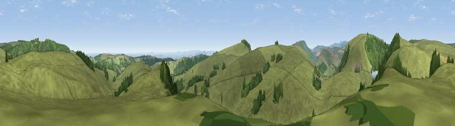

Viewpoint near Rhydycroesau
#14892 in England · top 50% of its area beats it · near Rhydycroesau · access?Where it is
The exact computed spot (SJ 22775 31825). Click the marker for map links.
Public access: no public right of way or access land is recorded at this exact spot — it may be on private land. Computed from Natural England's CRoW access layer and OpenStreetMap rights of way — not the legal definitive map. Always verify locally.
The view, rendered

A 360° render of this exact spot computed from the terrain model, tree cover and land cover — summer colours, afternoon light, calibrated against photographs of famous viewpoints. Real trees, hedges and buildings will differ in detail.
The panorama
Grey silhouette: terrain skyline in each direction (720 bearings, Earth curvature and refraction included). Dashed green: skyline with trees (+15 m) and buildings (+8 m) as obstacles. Blue strip: how far the ground is visible on each bearing.
Where the view opens
Wedge length = distance to the farthest visible ground on that bearing (vegetation-aware). Rings at 10, 25 and 50 km.
What fills the view
90% grassland · 9% woodland ·
Angular shares of the visible panorama (visual magnitude), not map area. Landscape diversity 0.16 (0–1 Shannon).
Key numbers
More beautiful places nearby
The staircase of upgrades: each row has a higher view potential than everything closer. Driving times are estimates from straight-line distance, calibrated against real road routing — check an actual route before setting out.
| Place | Direction | Drive | Score |
|---|---|---|---|
| Viewpoint near Rhydycroesau | NNE · 2 km | ~4 min | 65.8 |
| Bakers Hill | E · 3 km | ~7 min | 69.0 |
| Viewpoint near Trefonen | SSE · 5 km | ~10 min | 75.0 |
| Viewpoint near Melverley | SSE · 20 km | ~34 min | 78.2 |
| Viewpoint near Halfway House | SSE · 20 km | ~34 min | 83.3 |
| The Lawley | SE · 43 km | ~63 min | 85.8 |
| Viewpoint near Little Wenlock | ESE · 46 km | ~67 min | 86.6 |
| North Hill | SSE · 101 km | ~126 min | 86.8 |
52.87833, -3.14892 · source: screening · position refined by local search. Computed location — check access rights before visiting.